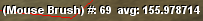

Starting The Terrain Editor
When you start the Terrain Editor, you will see a shot like the one above. This looks very much like the view in the Manipulator, for the fact that there are no windows obscuring your view. However, if you look closely, you'll notice some odd squares following your cursor around while you move your mouse. These squares are yet another Torque user interface device, the purpose of which is to give you feedback on what terrain area will be affected when you choose to manipulate it and to some degree how it will be affected. Before we jump right into learning how to edit the terrain, let us look at the other two devices on the screen.

I'm sure someone will correct my naming, but for now I'll refer to the text beside the label (Mouse Brush) as the Over Vertex Brush Scale. The purpose of this scale is two-fold: